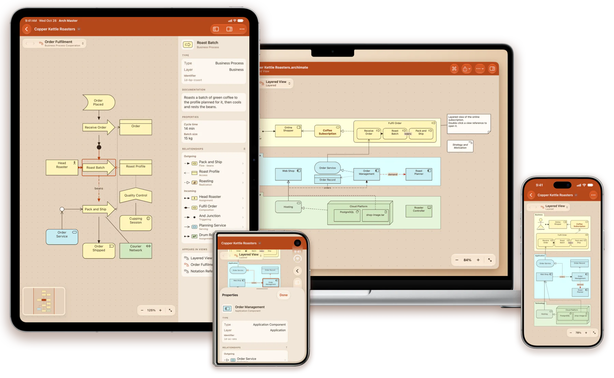
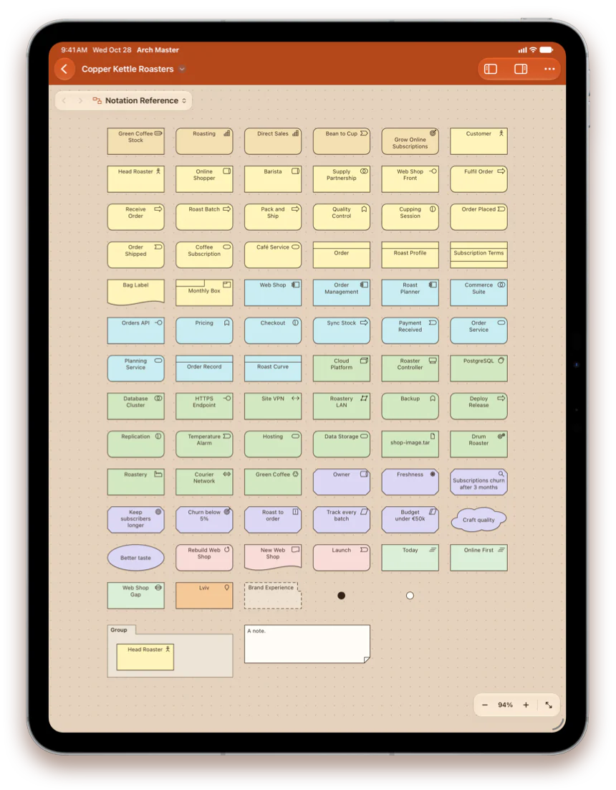
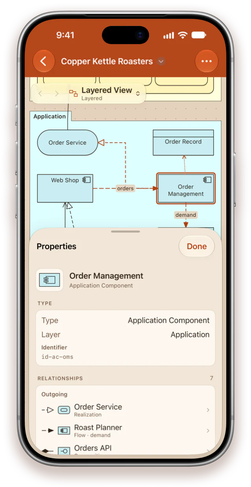
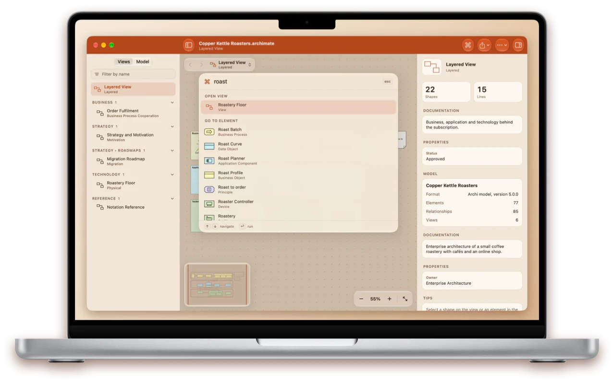
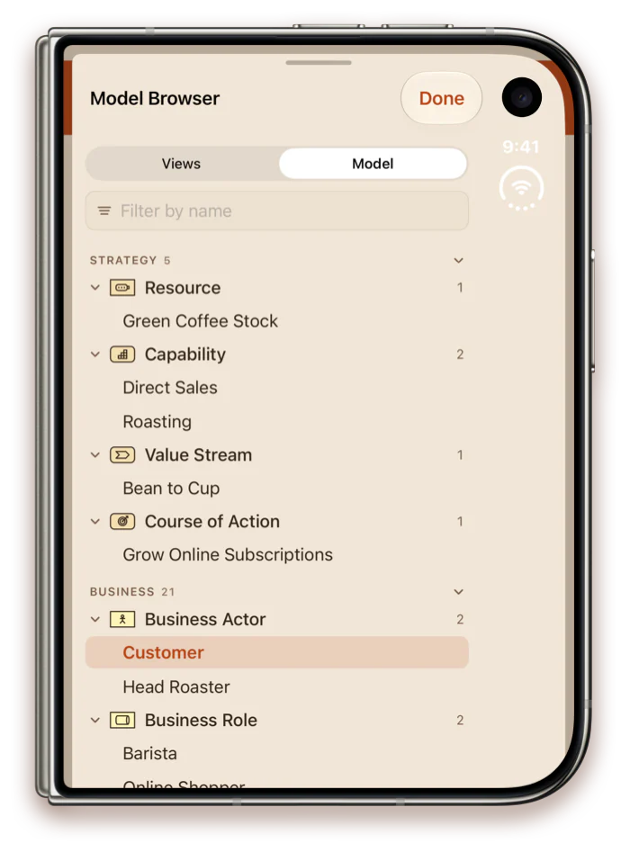
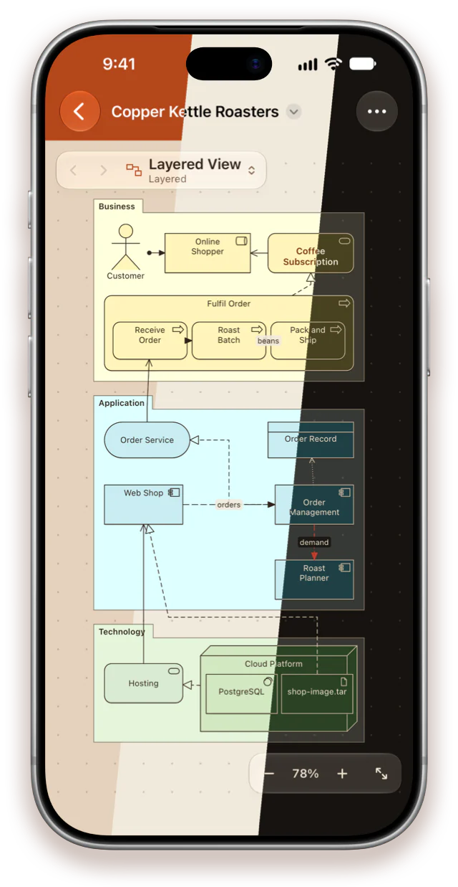

Enterprise architecture viewer
ArchiMate® models, native on iPhone, iPad and Mac
Open the models you keep in Archi or export from other modelling tools, and walk through every view, element and relationship — in a meeting, on the go or at your desk.
For iOS 18, iPadOS 18 and macOS 15 or later

Notation
Drawn the way the specification draws it
Every element in its layer colour, with square corners for structure, rounded for behaviour and cut for motivation, and its icon in the corner.
- The figures Archi offers instead: the actor, the service capsule, the 3D node and more
- Exact lines and ends for every relationship, access in the direction data moves
- Groups, notes, nested elements, junctions, bendpoints and the file's own colours

Inspector
Every relationship, a tap away
Select a shape and its connections light up. Properties shows what the element is and everything it touches, across the whole model.
- Type, layer, specialization, documentation and properties
- Every incoming and outgoing relationship — tap one to go to the other end
- Every view the element appears on — tap one to open it with the element selected

Made for Mac
Any element or view is a ⌘K away
One search field for every view, element and relationship of the model — by name, ID, property or documentation — and every command.
- Model browser, canvas and inspector side by side
- Find on the view, back and forward, zoom presets and a minimap
- Keyboard shortcuts, menus and printing

Model browser
The whole model, layer by layer
Views by folder with their viewpoints, and every element in a tree by layer and type, with its relationships grouped by type.
- Strategy, Business, Application, Technology, Physical, Motivation, Implementation & Migration
- A filter that searches views and elements at once
- Tap an element to select it on the view, or to see it in the inspector when it is drawn elsewhere

Three themes
Terracotta, Light or Dark
Terracotta takes its colours from the app icon: a terracotta bar and a warm clay canvas. Light is bright paper; Dark is espresso with cream lines.
- Switch at any time in Settings — it applies instantly
- Layer colours tuned to each theme
- Exported images, PDFs and printouts always use the light paper look

Everything in the file
Your model, complete
Archi and Exchange files
Archi's .archimate models, including the archives it writes for models with images, and Open Group Exchange files from other tools.
ArchiMate 3.1 and 3.2
Every element and relationship, junctions, specializations, documentation and properties, as the file describes them.
Forgiving with real files
A model with broken references or unknown types still opens: what is missing is drawn as a dashed placeholder.
Share and print
Export a view as PNG or vector PDF, or every view as one PDF with a page per view, and print.
Private and offline
No account, no tracking, no network. Models are ordinary files in storage you already use, and the app never changes them.
Seven languages
English, German, French, Ukrainian, Spanish, Japanese and Portuguese, with ArchiMate terms in each language's established words.
Take the architecture with you
One app for iPhone, iPad and Mac.